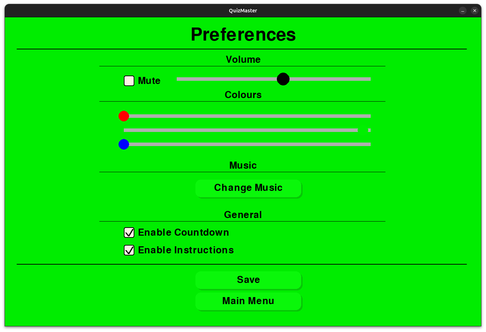

Welcome to this QuizMaster tutorial! The guide will help you understand how to use key features of the QuizMaster application, an open-source alternative to Kahoot. Please note that this guide explains how to use QuizMaster, not how to get it running. For this, we have created a seperate installation and troubleshooting guide. QuizMaster is written in Python and provides a powerful platform for creating and playing educational quizzes.
When you start QuizMaster, you will be greeted by the home screen. From here, you can choose to either play a quiz, create aand edit quizzes and change the settings (strictly speaking, you can also use the About button, but it is fairly self-explanitory).

Click on Play a Quiz to start playing or Make a Quiz to create a new quiz.
To play a quiz, follow these steps:
Random QuizGeneral Knowledge Quiz, which takes random questions from random quizzes and merges them into one quiz.During the quiz, you will see a question and multiple answer options. Click on the correct answer to proceed to the next question, or type the number asociated with the answer.
If you selected the Speed Run mode, try to answer all questions correctly as quickly as possible. In Survival mode, be careful with your answers as you have a limited number of lives.
QuizMaster supports multiple game modes, each offering a unique experience:
In Classic mode, you will answer a series of questions, each with a countdown timer. Follow these steps to play:
Features of Classic mode:
Classic V2 mode is similar to Classic mode but with an absolute time limit for the entire quiz. This game mode is normally considered the easiest. Follow these steps to play:
Features of Classic V2 mode:
In Speed Run mode, the goal is to answer all questions correctly as quickly as possible. Follow these steps to play:
Features of Speed Run mode:
In Survival mode, you have a limited number of lives, and each incorrect answer costs a life. Follow these steps to play:
Features of Survival mode:
The practice mode offers a relaxed environment for users to engage with quiz questions at their own pace. Immediate feedback is provided, notifying the player if the answer was correct. Participants can opt to reveal the correct answer or end the quiz at any time. Scores are not recorded. Follow these steps to play:
Reveal Answer button.To create a new quiz, follow these steps:
Files in the top left if creating an entirely new quiz, otherwise Save (just above Save As) will suffice.
Use the interactive GUI to manage and create quiz questions. You can add, edit, delete and duplicate questions. Many of these will have tooltips, so should be self-explanitory.
Make sure to provide clear and correct questions and answers to ensure a good quiz experience.
We welcome pull requests for both code contributions and the creation of new quizzes.
We are currently working on an even more convenient way to integrate new quizzes that won't require contributors to learn version control systems like Git or the GitHub platform. However, we highly encourage using Git, as this not only makes contributions more organized but also gives credit to the contributor, ensuring that your effort is recognized within our community.
In the preferences window, you can change the background music, volume, and background colour of the application:
Adjust the settings to personalize your QuizMaster experience:
The quiz.py script accepts the following arguments when starting:
-h, --help: Displays the help message and exits.-q [QUIZPATH], --quizPath [QUIZPATH]: Specifies the path to a quiz file. This allows you to load a specific quiz to play.-g [GAMEMODE], --gameMode [GAMEMODE]: Specifies the game mode. The available game modes are:
classicclassicV2speedRunsurvivalpractice-v , --volume: Sets the volume level for the game. Enter a float value between 0 and 1.To load a specific quiz, use the -q argument followed by the path to the quiz file:
./quiz.py -q path/to/quiz.jsonTo set the game mode, use the -g argument followed by the desired game mode:
./quiz.py -q path/to/quiz.json -g classicNote that the quiz path must be specified along with the game mode.
To set the volume level, use the -v argument followed by a float value between 0 and 1:
./quiz.py -v 0.5You can combine multiple arguments when running the script. For example, loading a harry potter quiz with the classic game mode and set the volume to 0.8:
./quiz.py -q "Quizzes/books and movies/harrypotter.json" -g classic -v 0.8The arguments may be combined in any other way, except that the quiz must be specified for the game mode argument to be given. This may be worked on in the future.
By using these arguments, you can customize your QuizMaster experience to suit your preferences.
Similarly in QuizCreator, a quiz parameter can be added to the end but for obvious reasons not a game mode parameter.
Explore these features to get the most out of your QuizMaster experience. Whether you're playing for fun or using it as an educational tool, QuizMaster offers a variety of options to suit your needs.